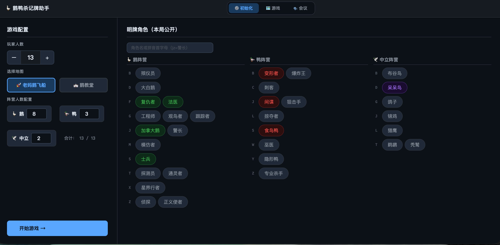
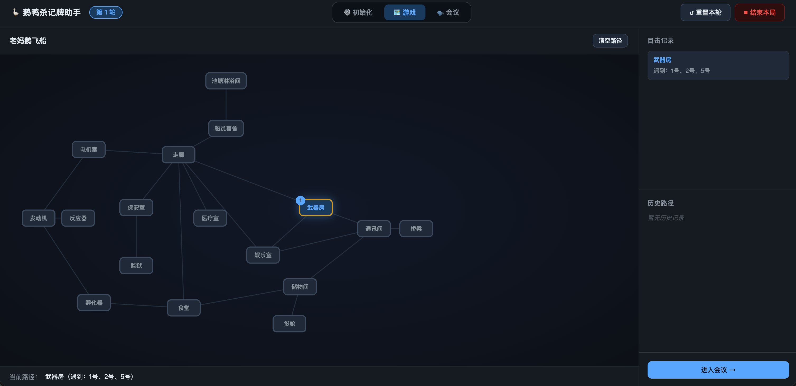

📸 界面预览

配置人数、地图、阵营比例，选择本局明牌角色。

可视化地图追踪路径，记录每轮移动和目击信息。

玩家卡片记录阵营、角色、可信度，阵营统计一目了然。
专为《鹅鸭杀》桌游设计的辅助工具，帮你追踪玩家路径、记录会议信息、统计阵营数据。
配置人数、地图、阵营比例，选择本局明牌角色。
可视化地图追踪路径，记录每轮移动和目击信息。
玩家卡片记录阵营、角色、可信度，阵营统计一目了然。
支持老妈鹅飞船、鹅教堂两张地图，可视化记录每轮玩家移动路径，快速定位可疑行为。
为每位玩家标记阵营、角色、可信度，支持目击记录和备注，会议时一目了然。
实时统计鹅/鸭/中立阵营人数，明牌角色、跳出角色、未知槽位一栏显示，死亡角色自动标红。
支持中文名称和拼音首字母搜索，快速找到目标角色，告别翻列表的烦恼。
一键导出本局复盘 .txt 文件，包含玩家信息、路径记录、阵营统计，方便赛后回顾。
点击上方「下载 ZIP」按钮，或前往 GitHub 仓库下载最新版本。
（访问 GitHub 需要梯子，下载后完全离线可用）
将下载的 .zip 文件解压到任意文件夹。
双击文件夹内的 index.html，用浏览器打开即可使用，无需安装任何软件。
配置人数、地图、阵营数量，选择明牌角色，点击「开始游戏」即可进入记录界面。
纯前端实现，数据存在本地，不收集任何信息。
有任何建议或问题，欢迎微信联系我